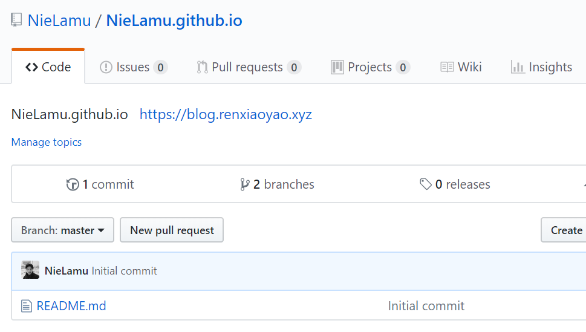
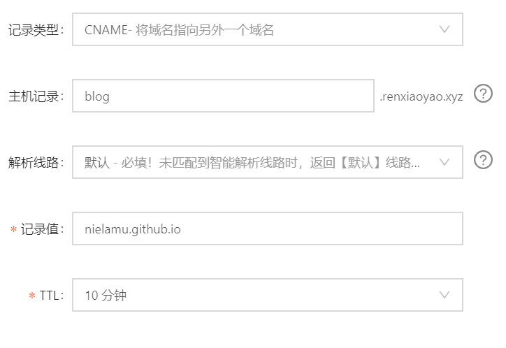
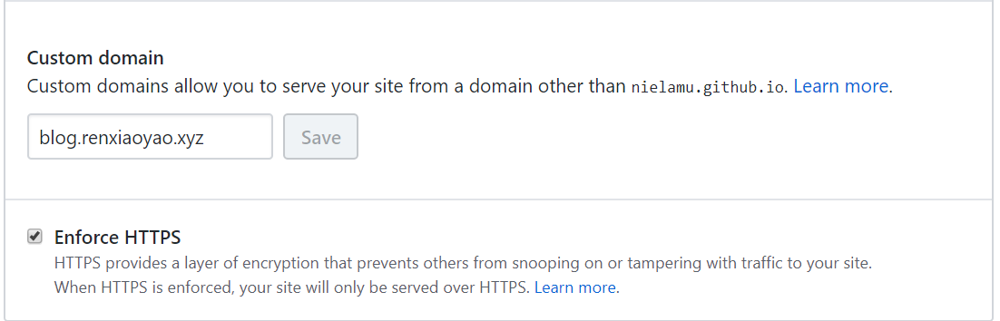

It’s a fully procedure on how to build a static blog with GitHub Pages and Hexo.
Prepare a working project
Create a new repository on GitHub
Remember to replace NieLamu with your username on GitHub in the following codes.
The name of the repository must be similar to NieLamu.github.io.

Initialize a local Hexo project
npx hexo init NieLamu.github.io
Relate GitHub repository with local Hexo project
cd NieLamu.github.io/
git init
git remote add origin https://github.com/NieLamu/NieLamu.github.io
Fork and customize a Hexo theme
Fork Material-T, then
git submodule add https://github.com/NieLamu/Material-T themes/Material-T
Push working branch with submodule to remote
git checkout -b develop
git add .
git commit -m "hexo init project with submodule"
git push origin develop
Modify theme
cd themes/Material-T/
...some modifies...
git add .
git commit -m "modify css and config"
git push origin master
generate and deploy website
Modify _config.yml
deploy:
type: git
repo: https://github.com/NieLamu/NieLamu.github.io.git
branch: master
Install git deploy module
npm install hexo-deployer-git --save
Clean, generate and deploy
npx hexo clean && npx hexo g && npx hexo d -m "update message"
Or
npx hexo clean
npx hexo g
npx hexo d -m "update message"
Serve
npx hexo clean && npx hexo g && npx hexo serve
Or
npx hexo serve
Push working branch to remote
git add .
git commit -m "modify css and config"
git push origin develop
Setting up a custom subdomain
Following the guide in Setting up a custom subdomain .
Set up Domain in DSP
Follow your DNS provider’s instructions to create a CNAME record that points your subdomain to your default pages domain.
For example, if you own the subdomain www.example.com, you can configure a CNAME record to point www.example.com to YOUR-GITHUB-USERNAME.github.io.
DNS changes can take over a full day to update, and the wait varies among DNS and hosting providers.

Set up Custom Domain in Repo
On GitHub, navigate to your GitHub Pages site’s repository.
Under your repository name, click Settings.
Under “Custom domain,” add your custom domain and click Save.

Create CNAME file
Create a file named CNAME in source folder with YOUR-GITHUB-USERNAME.github.io as content.
echo "blog.renxiaoyao.xyz" > source/CNAME
Or you can following Using a custom domain with GitHub Pages to set up other types of domain.
Refer:
[1]hexo史上最全搭建教程